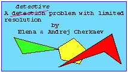
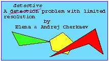

|  |  |

|

|
| Vitae | Research | Preprints, abstracts |
| Teaching | Proposal Prep. |
| 1. |
M-7710 - Optimization and Homogenization. |
||
| 2. |
M-3160-1 - Complex variables. T/Th, 9:40-10:30, ST 216 |
3. |
M-3160-2 - Complex variables. M/W, 11:50-12:40, NS 201 |
|  | |
|
|
|
|
Topics in mathematical modelling of composite materials
Andrej Cherkaev and Robert Kohn editors, Birkhauser, 1997 |
Variational methods for Structural Optimization
by Andrej Cherkaev, Springer 1998 (in preparation) |
| Seminars | Utah | Library | Math. Review | WP: Micro-Mech | SIAM meetings |
| AMS | SIAM | ISSMO | Math World | Math history | AMS meetings |
| NY Times | USA Today | Russia Today | The st.Petersburg Times |
|
Picture Gallery | ||
| Academy of Sciences | st Petersburg Technical University | Physico-Technical Institute | St. Petersburg's guide |
 sankt-Petersburg
sankt-Petersburg